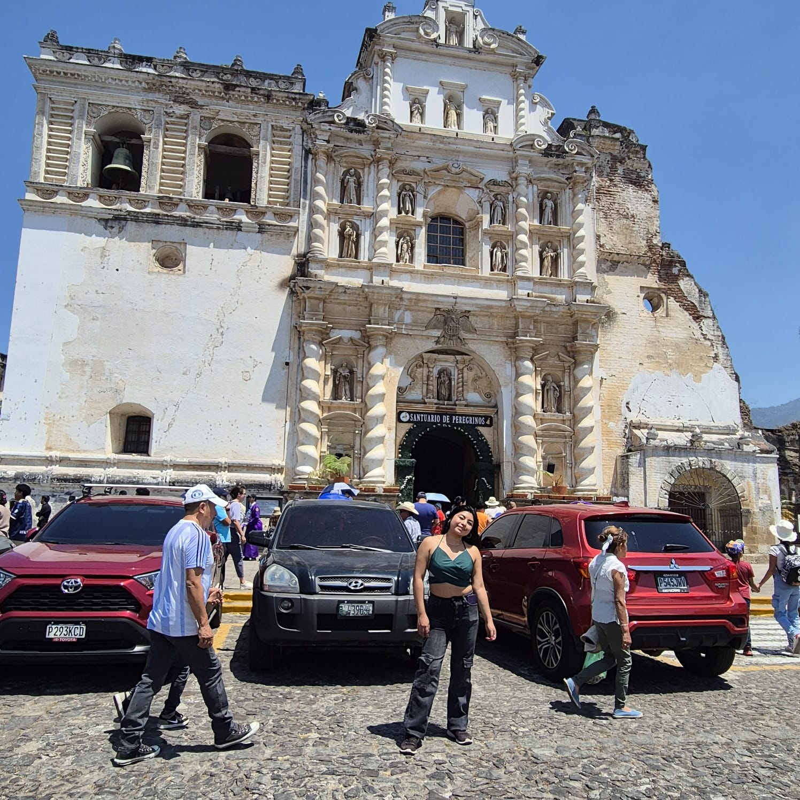
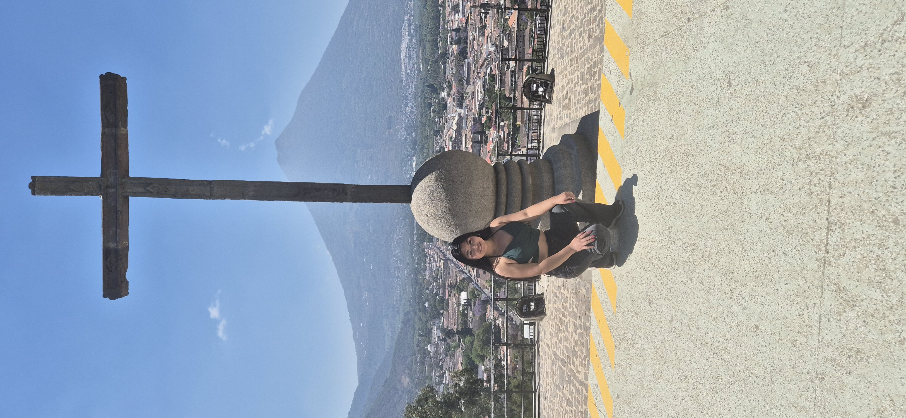

Antigua Guatemala
Antigua Guatemala es una ciudad reconocida por su arquitectura, sus calles empedradas esos bellos pajaritos que madrugan con su canto y su importancia histórica. Es uno de los destinos más visitados del país.


Que hace especial a Antigua Guatemala
- Arquitectura colonial:Conserva edificios históricos muy bien preservados.
- Cultura:Es famoso por sus tradiciones y celebraciones de Semana Santa.
- Gastronomía:Ofrece una gran variedad de restahurantes con comida típica e internacional.
- Artesanías:En sus mercados se pueden encontrar productos elaborados por artesanos locales.
Principales atractivos turísticos
| Atractivo | Descripción | Estado |
|---|---|---|
| Arco de Santa Catalina | Monumento histórico y uno de los símbolos de Antigua Guatemala. | Abierto al público |
| Parque Central | Lugar ideal para caminar y disfrutar de la arquitectura colonial. | Abierto al público |
| Iglesia La Merced | Templo colonial reconocido por su impresionante fachada borroca. | Abierto al público |